第 3 章 · 几何非线性与大变形分析
Element Analysis for Nonlinear Elastic Systems · PDF p151–250
📖 3.1 本章概览
本章讨论几何非线性（大变形的 Lagrangian 公式）。当位移较大（小变形假设失效）时，必须使用有限应变理论。
核心概念：
- 3.2 应变度量：变形梯度 F、Cauchy-Green 张量、Green-Lagrange 应变
- 3.3 应力度量：Piola-Kirchhoff、PK2、PK1、Cauchy
- 3.4 几何非线性有限元公式
- 3.5 应变能密度与材料模型（超弹性）
- 3.6 例子：索、梁、膜的大变形
- 3.7 MATLAB 代码实现
适合：橡胶密封、膜结构、软组织、橡胶衬套、汽车悬架衬套、轮胎等大变形成分的工程问题。
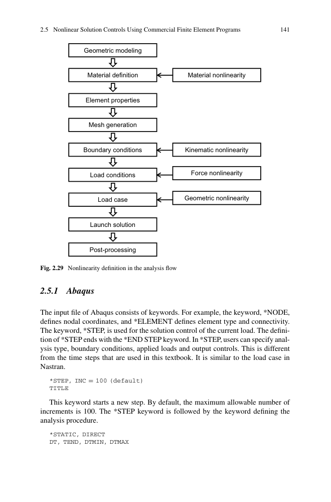
图 3.x 第 3 章研究范围
📐 3.2 大变形的运动学
3.2.1 变形映射
初始构形 X 映射到当前构形 x：
对点 P（初始构形）映射到点 Q（当前构形）。位移：
映射必须一一对应（连续可微），且 det F > 0。
3.2.2 变形梯度
J = det F > 0（不可压缩性约束 = J = 1）。
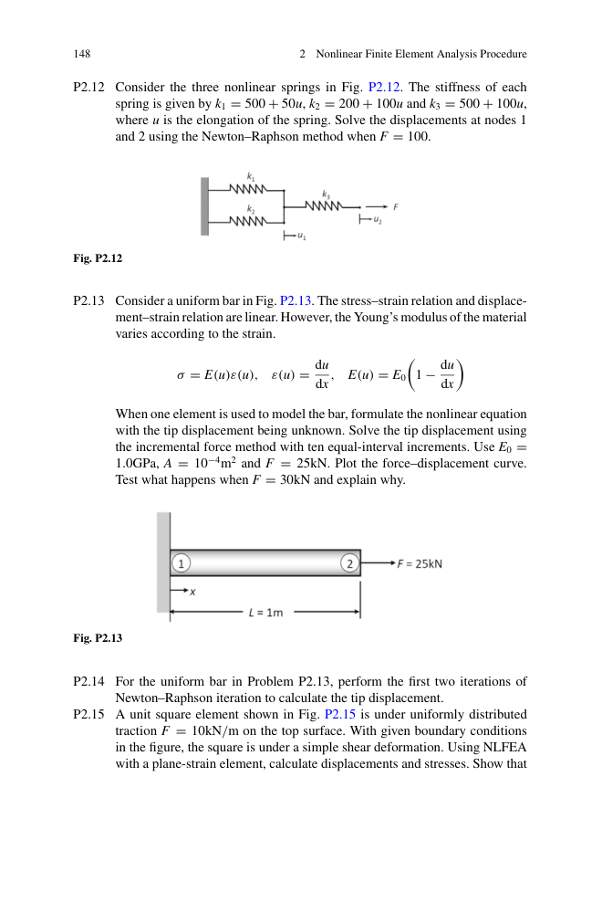
图 3.1 初始构形与当前构形：点 P 映射到 Q
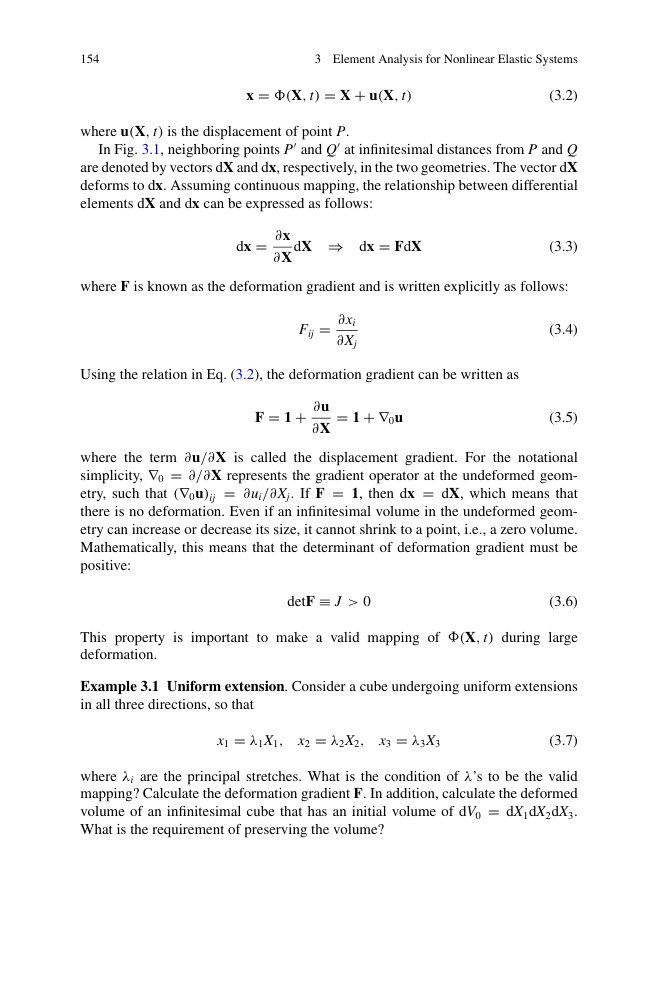
图 3.2 变形梯度 F = ∂x/∂X 的物理意义
立方体沿 3 个主方向均匀拉伸：xi = λi Xi。
- F = diag(λ1, λ2, λ3)
- J = λ1·λ2·λ3
- 有效映射条件：λi > 0（不可压缩 = J = 1）
- 体积不变：λ1·λ2·λ3 = 1
3.2.3 极分解（Polar Decomposition）
任意可逆 F 唯一分解为旋转和拉伸：
其中 R 是正交旋转张量（RTR = I），U/V 是正定对称伸长张量。
物理解释：先把初始构形沿主方向拉伸，再刚体旋转 → 当前构形。
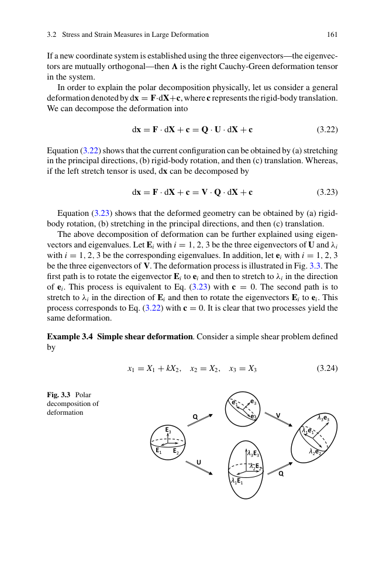
图 3.3 极分解的几何路径：先拉伸 E → e 再旋转 / 先旋转再拉伸
3.2.4 右 Cauchy-Green 变形张量
C 是对称正定张量，与极分解的关系：C = U2。
3.2.5 Green-Lagrange 应变（材料构形）
当位移梯度小时退化为小应变 ε = ½(∇u + ∇uT)。E 满足刚体转动下不变（在初始构形参考）。
小应变极限：∇0u → 0 时，二次项可忽略，E → ε。
3.2.6 Euler-Almansi 应变（空间构形）
在当前构形度量的应变：
绕 X3 轴转 α 角：x1 = X1cosα − X2sinα，x2 = X1sinα + X2cosα。
- 小应变 ε：ε = diag(cosα−1, cosα−1, 0) ≠ 0（违反刚体零应变原则 ❌）
- Lagrangian 应变 E：E = 0（正确排除刚体转动 ✓）
这说明 E 适合材料构形参考，e 适合空间构形参考。
x1 = X1 + kX2，x2 = X2，x3 = X3（典型大变形）：
- F = ⎡1 k 0⎤ = ⎡1 k 0⎤
⎣0 1 0⎦ ⎣0 1 0⎦（相对小量：位移 = X1X2，但有 k 二次项贡献） - C = ⎡1 k2+1 k 0⎤
⎣k 1 0⎦ - E11 = ½k2，E12 = ½k（与线性化差异在于 sp² 项）
💪 3.3 大变形的应力度量
大变形下 Cauchy 应力、PK1/PK2 在不同参考构形下有不同的转换：
4 种应力度量对比：
| 应力 | 参考构形 | 对称性 | 用途 |
|---|---|---|---|
| PK1 (P) | 初始 | 不对称 | 内力向量计算 |
| PK2 (S) | 初始 | 对称 | 超弹性本构 |
| Cauchy (σ) | 当前 | 对称 | 真实应力（输出） |
| Kirchhoff (τ) | 当前 | 对称 | τ = Jσ，理论方便 |
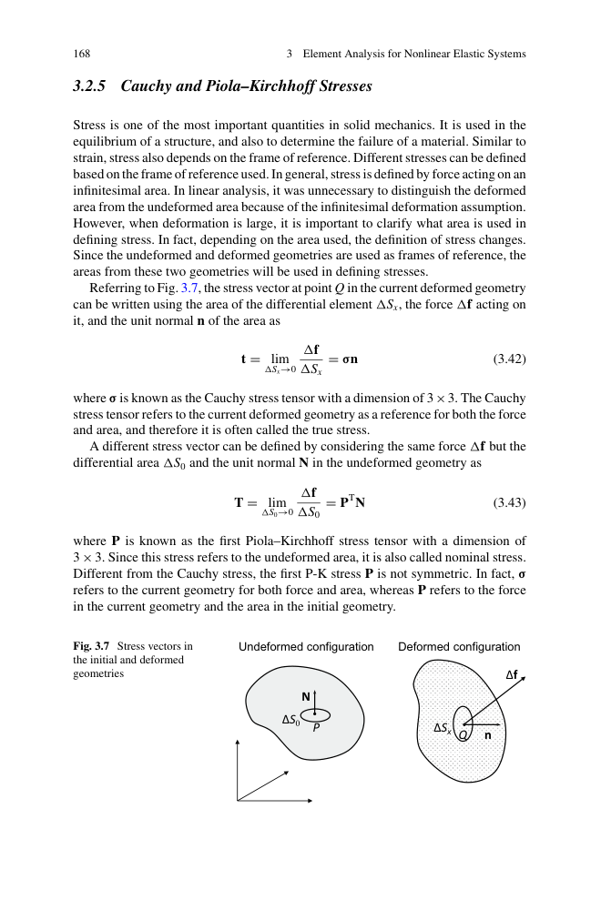
图 3.x 4 种应力度量在不同参考构形下的转换
📝 3.4 几何非线性有限元公式
两步法（最常用）：
1. 应力更新：
给定 F_t, F_{t+Δt}，计算 S = S(E) 或 P = P(F)
2. 内力计算：
P_int = ∫ B^T · S · dV₀ （TL） 或
P_int = ∫ B^T · τ · dV_t （UL）
3. 切线刚度：
K_T = ∫ B^T · D_t · B · dV（材料切线）
+ ∫ G^T · S · G · dV（几何/初始应力刚度）
其中 Dt 是材料切线，G 是几何非线性矩阵。KT = Kmat + Kgeo。
3.4.1 TL vs UL 公式
- TL（Total Lagrangian）：所有变量参考初始构形。刚度矩阵积分在初始构形，Kmat 恒定，Kgeo 随当前应力变。
- UL（Updated Lagrangian）：所有变量参考上一平衡步构形。每个载荷步后更新参考构形。
大多数商业软件（Abaqus/ANSYS）默认用TL 公式。
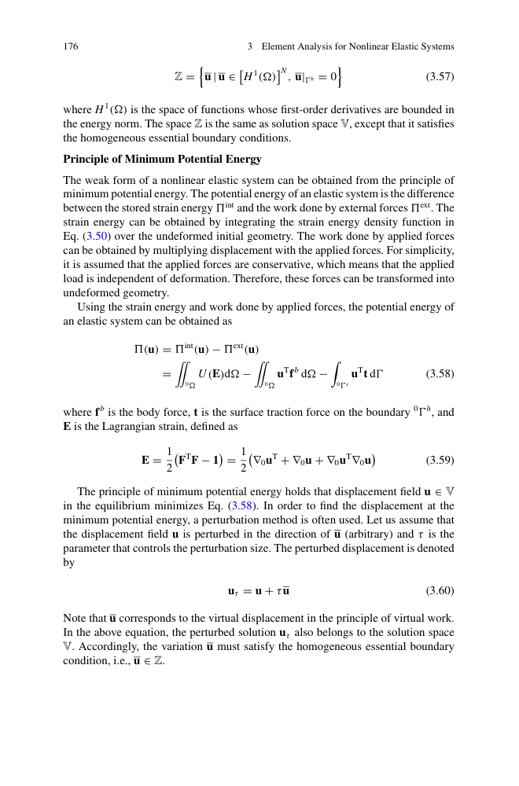
图 3.x TL vs UL：参考构形选择对刚度计算的影响
3.4.2 几何刚度（初始应力刚度）
大变形下，结构受轴向压力会降低弯曲刚度（如柱屈曲），受轴向拉力会提高弯曲刚度（如弦的张力）。这是几何刚度的物理意义。
🌟 3.5 超弹性与应变能密度
超弹性材料：应力只与当前应变状态有关，与历史无关。存在应变能函数 W：
常见超弹模型：
- Neo-Hookean：W = (μ/2)(I1 − 3) − μ·ln J + (λ/2)(ln J)²
- Mooney-Rivlin：W = C10(I1−3) + C01(I2−3) + (K/2)(J−1)²
- Ogden：W = Σi (μi/αi)(λ1αi + λ2αi + λ3αi − 3)
- Yeoh：W = C10(I1−3) + C20(I1−3)² + C30(I1−3)³
适用：橡胶、聚合物、生物组织等大变形的超弹性材料。
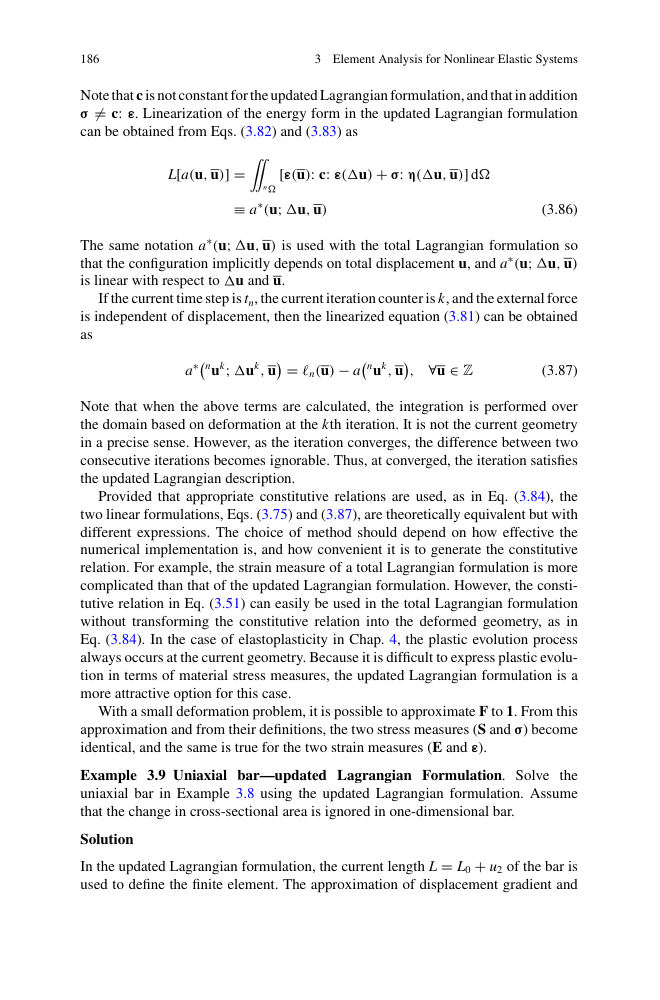
图 3.x 4 种超弹模型的单轴拉伸应力-应变曲线对比
近不可压缩问题
橡胶 K/E ≈ 1000-10000（近不可压缩），纯位移公式会"体积锁死"。解决方法：
- 混合 u-p 公式：位移 + 压力独立变量
- 罚函数法：在大体积模量下加约束
- B-bar 方法：用体积平均的体积应变
🔧 3.6 例子与 MATLAB 实现
橡胶圆柱（直径 50 mm，高 100 mm）放在刚性平面上，上端用刚性压头下压。从 0 压到 30 mm 高度。
结果：圆柱侧面"鼓出"，接触面从均匀变成边缘密中间疏，几何非线性显著。
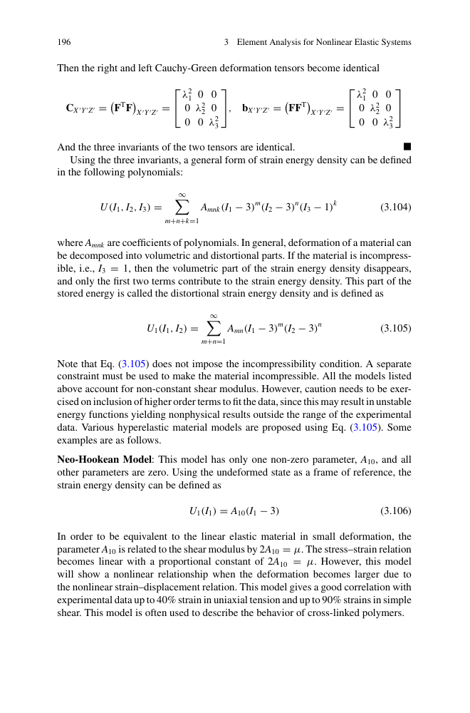
图 3.x 橡胶圆柱大变形：侧面鼓出 + 接触不均匀
方形膜（边长 L）四边固定，中心加横向集中力 F。膜厚度 h << L（薄膜）。
结果：膜变形呈"双锥形"（双曲面），几何非线性源于膜力与位移的耦合。
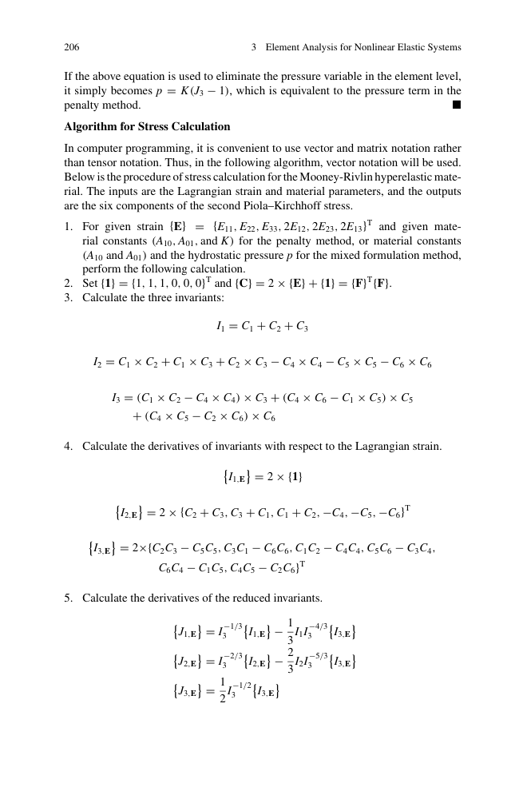
图 3.x 膜结构大变形（双锥形）
3.7 MATLAB 代码（第 3.6 节）
第 3.6 节给出 2D 平面应变单元的几何非线性 NR 实现（PDF p230-240）。
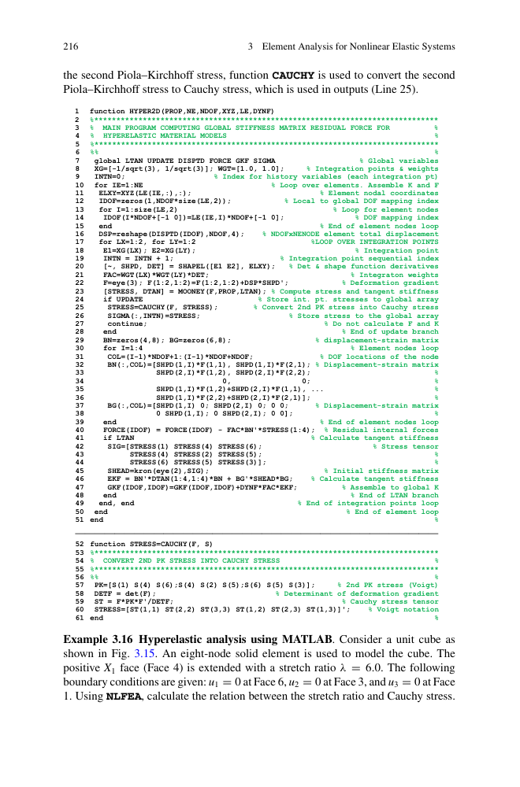
图 3.x 2D 平面应变单元大变形 NR 求解的 MATLAB 代码
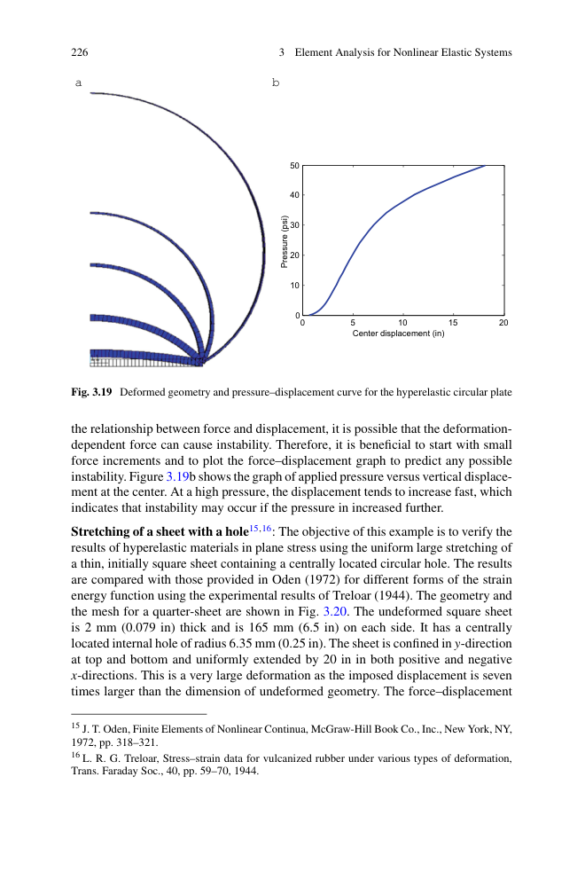
图 3.x 2D 几何非线性结果：网格变形 + 应力等高线
📌 3.7 本章总结
- ✅ 变形梯度 F + 极分解（旋转 + 拉伸）
- ✅ Green-Lagrange 应变 E（材料） vs Euler-Almansi e（空间）
- ✅ 4 种应力度量：PK1 / PK2(S) / Cauchy(σ) / Kirchhoff(τ)
- ✅ TL vs UL 公式（参考初始构形 vs 上一构形）
- ✅ 两步法：应力更新 → 内力/切线刚度
- ✅ 超弹模型：Neo-Hookean / Mooney-Rivlin / Ogden / Yeoh
- ✅ 近不可压缩：体积锁死 + u-p 混合公式
第 4 章将进入材料非线性（弹塑性、蠕变、粘塑性）。
📝 3.8 习题（PDF p230-250）
- 3.1 变形梯度判断（拉伸、剪切、扭转）
- 3.2 Lagrangian 应变 E 计算
- 3.3 Eulerian 应变 e 计算
- 3.4 简单剪切的 F、C、E、U、V、R
- 3.7 Cauchy 应力与 PK1/PK2 转换
- 3.11 梁的几何非线性（大转动）
- 3.12 方形单元纯剪切
- 3.20 2D 平面应变几何非线性 MATLAB 实现
{kind=link}
{kind=link}
{kind=link}
{kind=link}
{kind=link}
{kind=link}
{kind=link}
{kind=link}
{kind=link}
{kind=link}
{kind=link}